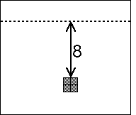
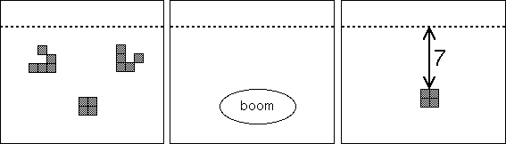

| With the logical operations NOT, AND, and OR any computer can be simulated in Life, provided a memory can be implemented. |
| Stable configurations are good candidates for memory. |
| Conway decided to use blocks, with the number stored by a block being the distance of the block from a refernce point in the computer. |
|  |
| To change the values stored in memory, the positions of blocks must be altered. |
| Conway found that two properly timed gliders can collide with a block, destroy the gliders and block, and rebuild the block closer to the computer. |
|  |
| That is, two gliders can reduce the number stored by a block. |
| Thirty glider collisions are needed to move the block the same distance farther from the computer. |
Return to Life.